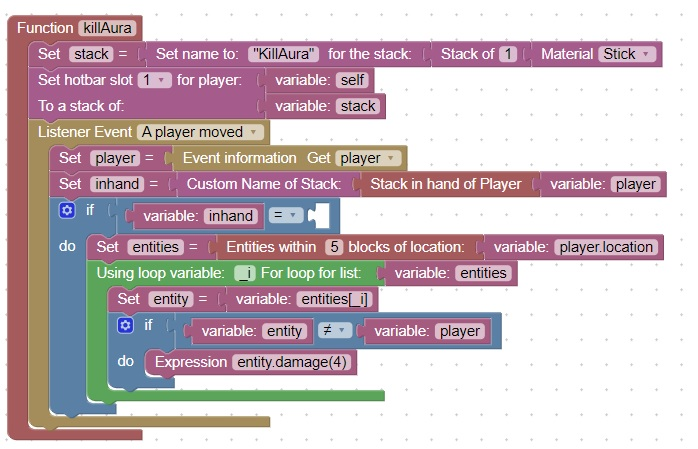

Homework: Special effect when a "KillAura" staff is held
Imagine that in your game there is a stick named KillAura
Whenever you hold the stick and another player or entity gets within 5 blocks, they start to take damage.
You can google "minecraft killaura" to get a general description of the behavior.
Coding description
Here is a picture if the entire code except for one missing block. Your assignment is to figure out which block is missing
and then test the code to make sure it is behaving properly.
Hint:The missing block allows you to check what a player is holding in their hand, and is the custom name of an item
